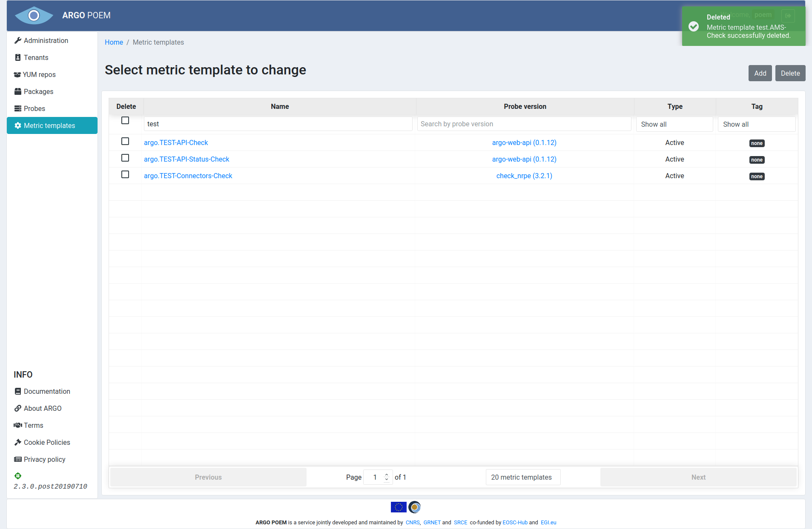
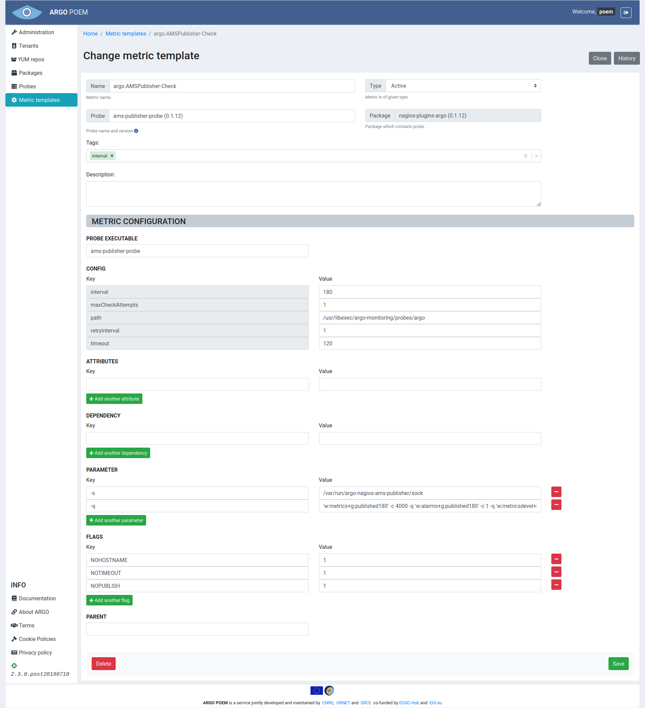
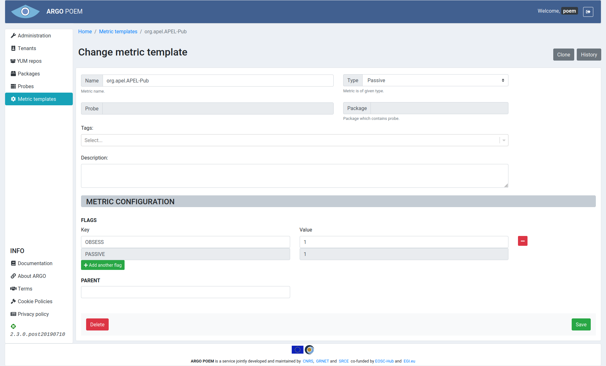

Metric templates
List of metric templates
Metric templates page is accessible from the menu on the left side. The page is shown in the image below.

Metric templates may be filtered by name, probe, type (active or passive), or tag. By clicking on the metric template name, user can access particular metric template's page. It is also possible to access particular probe version by clicking on its name.
There is also a feature to delete multiple metric templates at once. For that, user may select metrics (s)he wishes to delete from POEM, and click on Delete button (shown in figure below).

User will then be asked if (s)he is sure (s)he wants to delete selected metrics. Once the user confirms his/her selection, metric templates and their histories are deleted. Metrics imported to tenants and their histories are also deleted, and they are removed from metric profiles. User will be informed of successful deletion of metric templates (figure below). Also, in case of any error, user will be informed the same way.

Metric template details
Depending on metric template type, pages for particular metric templates are a bit different. Active metric template must have a probe assigned to it, while passive metric template does not.
Active metric templates
Active metric template's page is shown in the image below.

Field descriptions
Mandatory fields in case of active metric template:
- Name - metric template name;
- Probe - probe name and version. This field is autocomplete, user must choose from available probes;
- Type - type (active or passive; active in this example);
- Tag - tag;
- Probe executable - executable file;
- Config
- maxCheckAttempts - used to define the number of times that Nagios will retry the service check command if it returns any state other than an OK state; setting this value to 1 will cause Nagios to generate an alert without retrying the service check again;
- timeout - timeout (in seconds) for probe,
- path - path to executable file,
- interval - used to define the time (in minutes) to wait before scheduling the next "regular" check of the service; "regular" checks are those that occur when the service is in an OK state or when the service is in a non-OK state, but has already been rechecked maxCheckAttempts number of times;
- retryInterval - used to define the time (in minutes) to wait before scheduling a re-check of the service; services are rescheduled at the retry interval when they have changed to a non-OK state; once the service has been retried maxCheckAttempts times without a change in its status, it will revert to being scheduled at its "normal" rate as defined by the interval value.
Tags
Metric templates can be tagged by any tag. There are, however, two tags that are special. So called internal metrics are tagged with internal tag. Those metrics are checking internal processes which are necessary for all tenants. They are automatically imported to a tenant POEM once new tenant is created.
Metric templates tagged with deprecated tag are no longer being maintained, and are going to be deleted at an appropriate time.
Tag field is a multiple select field with autocomplete and a possibility to create new entries. So, when SuperAdmin user starts typing, all the already existing tags are listed (filtered by the letters typed-in). If the desired tag does not exist, user can create new one by simply clicking create entry.
Attributes
Attributes are part of metric template definition. They are used to pass values as arguments to metric command (e.g. TCP port on which service is listening, SE path, CE queue...).
Description of attributes is given in the table below.
| Attribute | Description |
|---|---|
BDII_PORT |
BDII port. |
BDII_DN |
BDII base DN |
BDII_TYPE |
Type of BDII, can be one of the following: bdii_top and bdii_site. |
CREAM_PORT |
CREAM CE port. |
CREAM_QUEUE |
CREAM CE queue for a given VO. |
FTS_PORT |
FTS port. |
GRIDFTP_PORT |
GridFTP port. |
GRAM_PORT |
GRAM Gatekeeper port. |
HOST_NAME |
Hostname of the monitored box. Do not use this attribute for parameter -H because it is set automatically. |
KEYSTORE |
Location of Java keystore with host certificate. Default value is /etc/nagios/globus/keystore.jks. |
LL_PORT |
LocalLogger port. |
MYPROXY_PORT |
MYPROXY port. |
NAGIOS_HOST_CERT |
Location of host certificate with nagios user ownership. Value is /etc/nagios/globus/hostcert.pem. |
NAGIOS_HOST_KEY |
Location of host certificate key with nagios user ownership. Value is /etc/nagios/globus/hostkey.pem. |
PATH |
Path extracted from URL. |
PORT |
Port extracted from URL. |
RGMA_PORT |
RGMA port. |
SE_PATH |
Storage element path for a given VO. |
<serviceType>_URL |
URL extracted topology database (e.g. GOCDB attribute URL); serviceType prefix is used in order to avoid collision in case of multiple serviceTypes on a same host. |
SITE_BDII |
Hostname of Site BDII. |
SITENAME |
Site name. |
SRM1_PORT |
SRM1 port. |
SRM2_PORT |
SRM2.2 port. |
SSL |
Attribute is set if URL scheme is https://. |
TOMCAT_PORT |
TOMCAT port. |
TOP_BDII |
Hostname of Top BDII used for generating configuration. |
TRUSTSTORE |
Location of Java truststore with all IGTF CA bundle. Default value is /etc/nagios/globus/truststore.ts. |
URL |
URL extracted topology database (e.g. GOCDB attribute URL). |
VOBOX_PORT |
VOBOX port. |
WMPROXY_PORT |
WMPROXY port. |
Flags
Flags are part of metric definition and control how the NCG configures metric. Below is description currently supported flags.
| Flag | Description |
|---|---|
NOARGS |
Metric's command is configured without arguments. |
NOHOSTNAME |
Metric's command is configured without -H parameter. |
NRPE_SERVICE |
Metric is configured to be executed via NRPE on service node. |
NOPUBLISH |
Metric results are not published to AMS. |
PASSIVE |
If defined, metric is part of a complex check. NCG configures metric as passive check only. Results for the metric should be generated by parent metric or received via message bus. |
VO |
Metric is VO dependent. Metric is configured multiple time for each VO or VO FQAN defined. In case that VO is not supported on a given host, metric is not generated at all. |
Passive metric templates
Page for particular passive metric template is considerably reduced and it is shown in the image below.

Mandatory fields in case of passive metric template:
- Name - metric template name;
- Type - type (active or passive; passive in this example);
- Flags
- PASSIVE flag is mandatory for passive metrics - it is added automatically when passive type is chosen through the UI and it is disabled to prevent users from accidentally deleting it.
Metric template cloning
Metric template can be cloned by clicking Clone button. Then a new form is opened with fields filled with values as they are defined in source metric template.
Metric template history
By clicking History button, one may see all the versions of metric template as is shown in image below.

The user may see particular version of the metric template by clicking on its version, and see the differences between two versions by choosing the versions and clicking Compare button.